Трансформаторы ТН 127/220-50
Накальные трансформаторы типа ТН 127/220-50 (127/220-50-М с уменьшенным расходом меди), предназначены для работы в радиоэлектронной аппаратуре, аппаратуре средств связи и электронно-вычислительных машинах при питании от промышленной сети переменного тока напряжением 127 и 220 В и частотой 50 Гц. Они обеспечивают напряжения 1,3 В, 5 В и 6,3 В и токи от 0,1 А до 10 А при мощности от 8 до 190 ВА. Наличие нескольких вторичных обмоток, рассчитанных на различные токи и напряжения, и возможность их последовательного и параллельного соединений, позволяют получить всевозможные сочетания токов и напряжений для питания устройств различного функционального назначения.
В зависимости от требований к влагоустойчивости трансформаторы различаются по двум исполнениям:
- всеклиматического исполнения (обозначается буквой «В»);
- для эксплуатации в районах с умеренным и холодным климатом (обозначается буквами «УХЛ»).
Основные электрические параметры трансформаторов приведены в таблицах 1 и 2, а трансформаторов с уменьшенным расходом меди, в таблицах 3 и 4,
Таблица 1
| Тип | Мощность, Вт | Сердечник | Максимальный ток первичной обмотки, А 127/220 В |
Напряжения вторичных обмоток, В |
Токи вторичных обмоток, А |
||||
|---|---|---|---|---|---|---|---|---|---|
| 7-8 | 9-10 (9-11) |
12-13 (12-14) |
7-8 | 9-11 | 12-14 | ||||
| ТН1-127/220-50 | 8,8 | ШЛ16×20 | 0,11/0,06 | 6,3 | 5,0 (6,3) | 0,6 | 0,8 | ||
| ТН2-127/220-50 | 13,3 | 0,15/0,09 | 6,3 | 5,0 (6,3) | 0,1 | 2 | |||
| ТН3-127/220-50 | 13,3 | 0,15/0,09 | 6,3 | 5,0 (6,3) | 0,25 | 1,8 | |||
| ТН4-127/220-50 | 20 | ШЛ16×25 | 0,21/0,12 | 6,3 | 5,0 (6,3) | 1,65 | 1,65 | ||
| ТН5-127/220-50 | 30 | ШЛ16×32 | 0,3/0,17 | 6,3 | 5,0 (6,3) | 0,48 | 4,3 | ||
| ТН6-127/220-50 | 41 | ШЛ20×20 | 0,4/0,23 | 6,3 | 5,0 (6,3) | 0,43 | 6 | ||
| ТН7-127/220-50 | 42 | 0,4/0,23 | 6,3 | 5,0 (6,3) | 3,3 | 3,3 | |||
| ТН8-127/220-50 | 58 | ШЛ20×25 | 0,53/0,32 | 6,3 | 5,0 (6,3) | 4,6 | 4,6 | ||
| ТН9-127/220-50 | 58 | 0,53/0,32 | 6,3 | 5,0 (6,3) | 0,5 | 8,6 | |||
| ТН10-127/220-50 | 77 | ШЛ20×32 | 0,68/0,4 | 6,3 | 5,0 (6,3) | 6 | 6 | ||
| ТН11-127/220-50 | 98 | ШЛ20×40 | 0,88/0,51 | 6,3 | 5,0 (6,3) | 7,8 | 7,8 | ||
| ТН12-127/220-50 | 8,7 | ШЛ16×16 | 0,11/0,06 | 6,3 | 5,0 (6,3) | 5,0 (6,3) | 0,37 | 0,51 | 0,51 |
| ТН13-127/220-50 | 13,3 | ШЛ16×20 | 0,15/0,03 | 6,3 | 5,0 (6,3) | 5,0 (6,3) | 0,71 | 0,71 | 0,71 |
| ТН14-127/220-50 | 20 | ШЛ16×25 | 0,21/0,12 | 6,3 | 5,0 (6,3) | 5,0 (6,3) | 1,4 | 0,92 | 0,92 |
| ТН15-127/220-50 | 20 | 0,21/0,12 | 6,3 | 5,0 (6,3) | 5,0 (6,3) | 0,92 | 1,13 | 1,13 | |
| ТН16-127/220-50 | 20 | 0,21/0,12 | 6,3 | 5,0 (6,3) | 5,0 (6,3) | 0,8 | 1,2 | 1,2 | |
| ТН17-127/220-50 | 30 | ШЛ16×32 | 0,21/0,12 | 6,3 | 5,0 (6,3) | 5,0 (6,3) | 0,8 | 2 | 2 |
| ТН18-127/220-50 | 30 | 0,3/0,17 | 6,3 | 5,0 (6,3) | 5,0 (6,3) | 3,3 | 0,8 | 0,8 | |
| ТН19-127/220-50 | 30 | 0,3/0,17 | 6,3 | 5,0 (6,3) | 5,0 (6,3) | 0,8 | 1,75 | 2,4 | |
| ТН20-127/220-50 | 41 | ШЛ20×20 | 0,4/0,23 | 6,3 | 5,0 (6,3) | 5,0 (6,3) | 0,9 | 2,8 | 2,8 |
| ТН21-127/220-50 | 41 | 0,4/0,23 | 6,3 | 5,0 (6,3) | 5,0 (6,3) | 0,9 | 1 | 4,5 | |
| ТН22-127/220-50 | 41,5 | 0,4/0,23 | 6,3 | 5,0 (6,3) | 5,0 (6,3) | 3,8 | 1,4 | 1,4 | |
| ТН23-127/220-50 | 58 | ШЛ20×25 | 0,53/0,32 | 6,3 | 5,0 (6,3) | 5,0 (6,3) | 1,4 | 3,9 | 3,9 |
| ТН24-127/220-50 | 58 | 0,53/0,32 | 6,3 | 5,0 (6,3) | 5,0 (6,3) | 6,3 | 1,4 | 1,4 | |
| ТН25-127/220-50 | 58 | 0,53/0,32 | 6,3 | 5,0 (6,3) | 5,0 (6,3) | 5,6 | 1,8 | 1,8 | |
| ТН26-127/220-50 | 58 | 0,53/0,32 | 6,3 | 5,0 (6,3) | 5,0 (6,3) | 1,6 | 2,7 | 7,8 | |
| ТН27-127/220-50 | 77 | ШЛ20×32 | 0,68/0,4 | 6,3 | 5,0 (6,3) | 5,0 (6,3) | 0,73 | 3,7 | 7,8 |
| ТН28-127/220-50 | 77 | 0,68/0,4 | 6,3 | 5,0 (6,3) | 5,0 (6,3) | 1,8 | 4,8 | 5,7 | |
| ТН29-127/220-50 | 98 | ШЛ20×40 | 0,88/0,51 | 6,3 | 5,0 (6,3) | 5,0 (6,3) | 2,2 | 4,5 | 9,1 |
Таблица 2
| Тип | Мощность, Вт |
Сердечник | Максимальный ток первичной обмотки, А 127/220 В |
Напряжения вторичных обмоток, В |
Токи вторичных обмоток, А |
||||
|---|---|---|---|---|---|---|---|---|---|
| 7-8 9-10 |
11-12 (11-13) 14-15 (14-16) |
7-8 | 9-10 | 11-13 | 14-16 | ||||
| ТН30-127/220-50 | 13,3 | ШЛ16×20 | 0,15/0,087 | 6,3 | 5,0(6,3) | 0,55 | 0,55 | 0,55 | 0,55 |
| ТН31-127/220-50 | 20 | ШЛ16×25 | 0,21/0,12 | 6,3 | 5,0(6,3) | 2,8 | 0,13 | 0,13 | 0,13 |
| ТН32-127/220-50 | 20 | 0,21/0,12 | 6,3 | 5,0(6,3) | 0,65 | 0,65 | 1 | 1 | |
| ТН33-127/220-50 | 20 | 0,21/0,12 | 6,3 | 5,0(6,3) | 0,2 | 1 | 1 | 1 | |
| ТН34-127/220-50 | 30 | ШЛ16×32 | 0,3/0,17 | 6,3 | 5,0(6,3) | 2,4 | 0,8 | 0,8 | 0,8 |
| ТН35-127/220-50 | 30 | 0,3/0,17 | 6,3 | 5,0(6,3) | 1 | 2 | 0,8 | 0,85 | |
| ТН36-127/220-50 | 30 | 0,3/0,17 | 6,3 | 5,0(6,3) | 1,2 | 1,2 | 1,2 | 1,2 | |
| ТН37-127/220-50 | 41 | ШЛ20×20 | 0,4/0,23 | 6,3 | 5,0(6,3) | 4 | 0,85 | 0,8 | 0,85 |
| ТН38-127/220-50 | 41 | 0,4/0,23 | 6,3 | 5,0(6,3) | 0,85 | 2,8 | 1,4 | 1,4 | |
| ТН39-127/220-50 | 41 | 0,4/0,23 | 6,3 | 5,0(6,3) | 0,8 | 0,8 | 2,4 | 2,4 | |
| ТН40-127/220-50 | 41 | 0,4/0,23 | 6,3 | 5,0(6,3) | 2,8 | 1,2 | 1,2 | 1,2 | |
| ТН41-127/220-50 | 58 | ШЛ20×25 | 0,53/0,32 | 6,3 | 5,0(6,3) | 0,6 | 1,3 | 2,9 | 4,4 |
| ТН42-127/220-50 | 58 | 0,53/0,32 | 6,3 | 5,0(6,3) | 1,4 | 2,6 | 2,6 | 2,6 | |
| ТН43-127/220-50 | 58 | 0,53/0,32 | 6,3 | 5,0(6,3) | 4,7 | 1,5 | 1,5 | 1,5 | |
| ТН44-127/220-50 | 58 | 0,53/0,32 | 6,3 | 5,0(6,3) | 0,86 | 2,16 | 3 | 3 | |
| ТН45-127/220-50 | 58 | 0,53/0,32 | 6,3 | 5,0(6,3) | 2,64 | 2,16 | 0,95 | 0,95 | |
| ТН46-127/220-50 | 58 | 0,53/0,32 | 6,3 | 5,0(6,3) | 2,3 | 2,3 | 2,3 | 2,3 | |
| ТН47-127/220-50 | 58 | 0,53/0,32 | 6,3 | 5,0(6,3) | 0,92 | 3,5 | 2,4 | 2,4 | |
| ТН48-127/220-50 | 58 | 0,53/0,32 | 6,3 | 5,0(6,3) | 2,4 | 4,8 | 1 | 1 | |
| ТН49-127/220-50 | 77 | ШЛ20×32 | 0,68/0,4 | 6,3 | 5,0(6,3) | 1,43 | 4,9 | 2,9 | 2,9 |
| ТН50-127/220-50 | 77 | 0,68/0,4 | 6,3 | 5,0(6,3) | 1,6 | 5,6 | 2,5 | 2,5 | |
| ТН51-127/220-50 | 77 | 0,68/0,4 | 6,3 | 5,0(6,3) | 1,5 | 1,5 | 4,7 | 4,7 | |
| ТН52-127/220-50 | 77 | 0,68/0,4 | 6,3 | 5,0(6,3) | 0,45 | 5,9 | 3 | 3 | |
| ТН53-127/220-50 | 98 | ШЛ20×40 | 0,88/0,51 | 6,3 | 5,0(6,3) | 0,82 | 3,2 | 5,7 | 5,7 |
| ТН54-127/220-50 | 98 | 0,88/0,51 | 6,3 | 5,0(6,3) | 2,2 | 4,45 | 4,45 | 4,45 | |
| ТН55-127/220-50 | 98 | 0,88/0,51 | 6,3 | 5,0(6,3) | 0,76 | 0,76 | 7 | 7 | |
| ТН56-127/220-50 | 98 | 0,88/0,51 | 6,3 | 5,0(6,3) | 5,4 | 3,4 | 3,4 | 3,4 | |
| ТН57-127/220-50 | 98 | 0,88/0,51 | 6,3 | 5,0(6,3) | 1,64 | 3 | 5,5 | 5,5 | |
| ТН58-127/220-50 | 122 | ШЛ25×25 | 1,0/0,63 | 6,3 | 5,0(6,3) | 2,7 | 5,5 | 5,5 | 5,5 |
| ТН59-127/220-50 | 122 | 1,0/0,63 | 6,3 | 5,0(6,3) | 1,8 | 4,3 | 6,6 | 6,6 | |
| ТН60-127/220-50 | 152 | ШЛ25×32 | 1,5/0,85 | 6,3 | 5,0(6,3) | 5,9 | 5,9 | 6,1 | 6,1 |
| ТН61-127/220-50 | 190 | ШЛ25×40 | 1,66/0,95 | 6,3 | 5,0(6,3) | 6,1 | 8 | 8 | 8 |
Таблица 3
| Тип | Мощность, Вт |
Сердечник | Максимальный ток первичной обмотки, А 127/220 В |
Напряжения вторичных обмоток, В |
Токи вторичных обмоток, А |
||||
|---|---|---|---|---|---|---|---|---|---|
| 7-8 | 9-10 (9-11) |
12-13 (12-14) |
7-8 | 9-11 | 12-14 | ||||
| ТН2-127/220-50М | 14,5 | ШЛМ20×20 | 0,20/0,12 | 6,3 | 5,0 (6,3) | — | 1,14 | 1,14 | — |
| ТН3-127/220-50М | 14,5 | 0,20/0,12 | 6,3 | 5,0 (6,3) | — | 0,48 | 1,86 | — | |
| ТН4-127/220-50М | 21,0 | ШЛМ20×25 | 0,27/0,16 | 6,3 | 5,0 (6,3) | — | 1,85 | 1,50 | — |
| ТН5-127/220-50М | 33,0 | ШЛМ20×32 | 0,39/0,22 | 6,3 | 5,0 (6,3) | 5,0 (6,3) | 1,00 | 1,85 | 2,30 |
| ТН8-127/220-50М | 60,0 | ШЛМ25×25 | 0,62/0,36 | 6,3 | 5,0 (6,3) | — | 0,52 | 9,00 | — |
| ТН9-127/220-50М | 60,0 | 0,62/0,36 | 6,3 | 5,0 (6,3) | — | 0,52 | 9,00 | — | |
| ТН10-127/220-50М | 75,0 | ШЛМ25×32 | 0,87/0,50 | 6,3 | 5,0 (6,3) | — | 5,95 | 5,95 | — |
| ТН11-127/220-50М | 110,0 | ШЛМ25×40 | 1,09/0,63 | 6,3 | 5,0 (6,3) | — | 8,70 | 8,70 | — |
| ТН13-127/220-50М | 14,5 | ШЛМ20×20 | 0,20/0,12 | 6,3 | 5,0 (6,3) | 5,0 (6,3) | 0,78 | 0,78 | 0,78 |
| ТН14-127/220-50М | 21,0 | ШЛМ20×25 | 0,27/0,16 | 6,3 | 5,0 (6,3) | 5,0 (6,3) | 0,80 | 1,28 | 1,28 |
| ТН15-127/220-50М | 21,0 | 0,27/0,16 | 6,3 | 5,0 (6,3) | 5,0 (6,3) | 0,80 | 1,28 | 1,28 | |
| ТН16-127/220-50М | 21,0 | 0,27/0,16 | 6,3 | 5,0 (6,3) | 5,0 (6,3) | 0,80 | 1,28 | 1,28 | |
| ТН17-127/220-50М | 33,0 | ШЛМ20×32 | 0,39/0,22 | 6,3 | 5,0 (6,3) | 5,0 (6,3) | 1,00 | 1,85 | 2,30 |
| ТН18-127/220-50М | 33,0 | 0,39/0,22 | 6,3 | 5,0 (6,3) | 5,0 (6,3) | 1,00 | 1,85 | 2,30 | |
| ТН19-127/220-50М | 33,0 | 0,39/0,22 | 6,3 | 5,0 (6,3) | 5,0 (6,3) | 1,00 | 1,85 | 2,30 | |
| ТН23-127/220-50М | 60,0 | ШЛМ25×25 | 0,62/0,36 | 6,3 | 5,0 (6,3) | 5,0 (6,3) | 1,55 | 4,00 | 4,00 |
| ТН24-127/220-50М | 60,0 | 0,62/0,36 | 6,3 | 5,0 (6,3) | 5,0 (6,3) | 6,30 | 1,60 | 1,60 | |
| ТН25-127/220-50М | 60,0 | 0,62/0,36 | 6,3 | 5,0 (6,3) | 5,0 (6,3) | 5,60 | 2,00 | 2,00 | |
| ТН26-127/220-50М | 60,0 | 0,62/0,36 | 6,3 | 5,0 (6,3) | 5,0 (6,3) | 1,80 | 2,80 | 7,94 | |
| ТН27-127/220-50М | 75,0 | ШЛМ25×32 | 0,87/0,50 | 6,3 | 5,0 (6,3) | 5,0 (6,3) | 1,04 | 3,65 | 7,25 |
| ТН28-127/220-50М | 75,0 | 0,87/0,50 | 6,3 | 5,0 (6,3) | 5,0 (6,3) | 1,94 | 4,57 | 5,43 | |
Таблица 4
| Тип | Мощность, Вт |
Сердечник | Максимальный ток первичной обмотки, А 127/220 В |
Напряжения вторичных обмоток, В |
Токи вторичных обмоток, А |
||||
|---|---|---|---|---|---|---|---|---|---|
| 7-8 9-10 |
11-12 (11-13) 14-15 (14-16) |
7-8 | 9-10 | 11-13 | 14-16 | ||||
| ТН30-127/220-50-М | 14,0 | ШЛМ20×20 | 0,20/0,12 | 6,3 | 5,0 (6,3) | 0,58 | 0,58 | 0,58 | 0,58 |
| ТН31-127/220-50-М | 21,0 | ШЛМ20×25 | 0,27/0,16 | 6,3 | 5,0 (6,3) | 2,70 | 0,22 | 0,22 | 0,22 |
| ТН32-127/220-50-М | 21,0 | 0,27/0,16 | 6,3 | 5,0 (6,3) | 0,68 | 0,68 | 1,00 | 1,00 | |
| ТН33-127/220-50-М | 21,0 | 0,27/0,16 | 6,3 | 5,0 (6,3) | 0,35 | 1,00 | 1,00 | 1,00 | |
| ТН34-127/220-50-М | 33,0 | ШЛМ20×32 | 0,39/0,22 | 6,3 | 5,0 (6,3) | 2,50 | 0,92 | 0,92 | 0,92 |
| ТН35-127/220-50-М | 33,0 | 0,39/0,22 | 6,3 | 5,0 (6,3) | 1,05 | 2,10 | 1,05 | 1,05 | |
| ТН36-127/220-50-М | 33,0 | 0,39/0,22 | 6,3 | 5,0 (6,3) | 1,30 | 1,30 | 1,30 | 1,30 | |
| ТН41-127/220-50-М | 60,0 | ШЛМ25×25 | 0,62/0,38 | 6,3 | 5,0 (6,3) | 1,20 | 1,20 | 3,00 | 4,20 |
| ТН42-127/220-50-М | 60,0 | 0,62/0,38 | 6,3 | 5,0 (6,3) | 1,45 | 2,70 | 2,70 | 2,70 | |
| ТН43-127/220-50-М | 60,0 | 0,62/0,38 | 6,3 | 5,0 (6,3) | 4,80 | 1,58 | 1,58 | 1,58 | |
| ТН44-127/220-50-М | 60,0 | 0,62/0,38 | 6,3 | 5,0 (6,3) | 1,00 | 2,90 | 3,00 | 3,00 | |
| ТН45-127/220-50-М | 60,0 | 0,62/0,38 | 6,3 | 5,0 (6,3) | 2,75 | 2,72 | 1,00 | 1,00 | |
| ТН46-127/220-50-М | 60,0 | 0,62/0,38 | 6,3 | 5,0 (6,3) | 2,38 | 2,38 | 2,38 | 2,38 | |
| ТН47-127/220-50-М | 60,0 | 0,62/0,38 | 6,3 | 5,0 (6,3) | 1,00 | 3,50 | 2,50 | 2,50 | |
| ТН48-127/220-50-М | 60,0 | 0,62/0,38 | 6,3 | 5,0 (6,3) | 2,50 | 4,80 | 1,15 | 1,15 | |
| ТН49-127/220-50-М | 75,0 | ШЛМ25×32 | 0,87/0,50 | 6,3 | 5,0 (6,3) | 2,30 | 4,40 | 2,60 | 2,60 |
| ТН50-127/220-50-М | 75,0 | 0,87/0,50 | 6,3 | 5,0 (6,3) | 1,80 | 5,10 | 2,50 | 2,50 | |
| ТН51-127/220-50-М | 75,0 | 0,87/0,50 | 6,3 | 5,0 (6,3) | 1,55 | 1,55 | 4,40 | 4,40 | |
| ТН52-127/220-50-М | 75,0 | 0,87/0,50 | 6,3 | 5,0 (6,3) | 0,60 | 5,30 | 3,00 | 3,00 | |
| ТН54-127/220-50-М | 110,0 | ШЛМ25×40 | 1,09/0,63 | 6,3 | 5,0 (6,3) | 2,50 | 5,00 | 5,00 | 5,00 |
| ТН55-127/220-50-М | 110,0 | 1,09/0,63 | 6,3 | 5,0 (6,3) | 0,75 | 0,75 | 8,00 | 8,00 | |
| ТН56-127/220-50-М | 110,0 | 1,09/0,63 | 6,3 | 5,0 (6,3) | 5,80 | 3,89 | 3,89 | 3,89 | |
| ТН57-127/220-50-М | 110,0 | 1,09/0,63 | 6,3 | 5,0 (6,3) | 2,00 | 3,85 | 5,80 | 5,80 | |
Принципиальные схемы
Трансформаторы типа ТН с уменьшенным расходом меди, так же, как и обычные трансформаторы ТН, выпускаются с двумя типами первичной обмотки (первый тип рассчитан на напряжение сети 127 или 220 В, второй только на 220 В). Все возможные варианты обмоток представлены на электрических принципиальных схемах на рисунках 1 - 6.
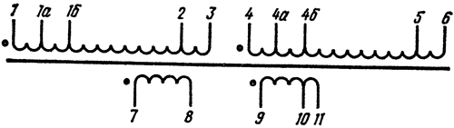
Рис. 1 - Электрическая принципиальная схема трансформаторов ТН с двумя вторичными обмотками (127/220 В)
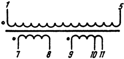
Рис. 2 - Электрическая принципиальная схема трансформаторов ТН с двумя вторичными обмотками (220 В)
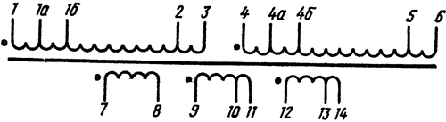
Рис. 3 - Электрическая принципиальная схема трансформаторов ТН с тремя вторичными обмотками (127/220 В)
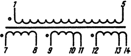
Рис. 4 - Электрическая принципиальная схема трансформаторов ТН с тремя вторичными обмотками (220 В)
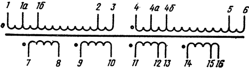
Рис. 5 - Электрическая принципиальная схема трансформаторов ТН с четырьмя вторичными обмотками (127/220 В)
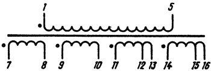
Рис. 6 - Электрическая принципиальная схема трансформаторов ТН с четырьмя вторичными обмотками (220 В)
Таблица 5
| Отводы первичной обмотки | Напряжение на отводах первичной обмотки, В |
|---|---|
| 1 – 1а | 3,2 |
| 4 – 4а | 3,2 |
| 1 – 1б | 6,3 |
| 4 – 4б | 6,3 |
| 1 – 2 | 110 |
| 4 – 5 | 110 |
| 1 – 3 | 127 |
| 4 – 6 | 127 |
Варианты подключения к сети переменного тока.
Варианты подключения трансформаторов типа ТН к сети переменного тока с частотой 50 Гц приведены в таблице 6.
Таблица 6
| Номинальное напряжение первичной обмотки, В | Номинальное напряжение сети, В | Соединение выводов трансформатора | Выводы, на которые подается напряжение сети |
|---|---|---|---|
| 127/220 | 220 | 2 и 4 | 1 и 5 |
| 127 | 1 и 4, 3 и 6 | 1 и 3 | |
| 220 | 220 | – | 1 и 5 |
Конструкция и размеры
Конструкция и размеры трансформаторов ТН с уменьшенным расходом меди не отличается от обычных трансформаторов ТН и приведены на рисунках 7 — 11 ниже и в таблице 7.
Трансформаторы типа ТН с частотой питающей сети 50 Гц изготовляются на магнитопроводах стандартизованного ряда.
Таблица 7
| Типоразмер магнитопровода |
Исполнение | Номер рисунка | Размеры, мм | Масса, г | ||||||
|---|---|---|---|---|---|---|---|---|---|---|
| A | A1 | B | H | h | L | d | ||||
ШЛМ20×20 |
В | 9 и 10 | 35 40 46 |
46 | 63 68 75 |
75 | 7,5 | 74 | М4 | 850 950 1100 |
| ШЛМ25×25 ШЛМ25×32 ШЛМ25×40 |
46 50 60 |
58 | 74 81 89 |
92 | 10 | 88 | М5 | 1550 2100 2700 |
||
| ШЛМ20×20 ШЛМ20×25 ШЛМ20×32 |
УХЛ | 7 и 11 |
35 40 46 |
46 | 57 62 69 |
72 | 6,5 | 68 | М4 | 750 850 1000 |
| ШЛМ25×25 ШЛМ25×32 ШЛМ25×40 |
8 | 46 50 60 |
58 | 68 75 83 |
88 | – | 82 | 5,5 | 1400 1700 2100 |
|
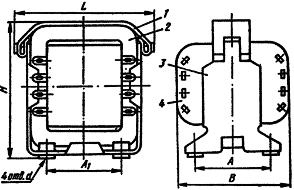
Рис. 7 - Конструкция броневых трансформаторов типа ТН с резьбовыми втулками для крепления, исполнение УХЛ (1 - лента, 2 - магнитопровод, 3 - обойма, 4 - катушка)
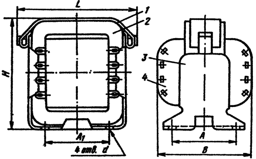
Рис. 8 - Конструкция броневых трансформаторов типа ТН с отверстиями для крепления, исполнение УХЛ (1 - лента, 2 - магнитопровод, 3 - обойма, 4 - катушка)
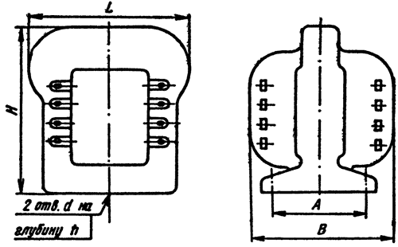
Рис. 9 - Конструкция броневых трансформаторов типа ТН с двумя резьбовыми отверстиями для крепления, исполнение В
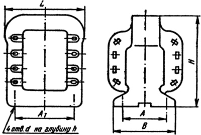
Рис. 10 - Конструкция броневых трансформаторов типа ТН с четырьмя резьбовыми отверстиями для крепления, исполнение В
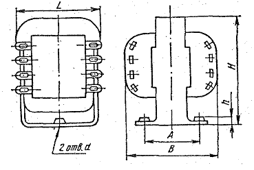
Рис. 11 - Конструкция броневых трансформаторов типа ТН с обмотками из круглого провода, с уменьшенным расходом меди, исполнение УХЛ.